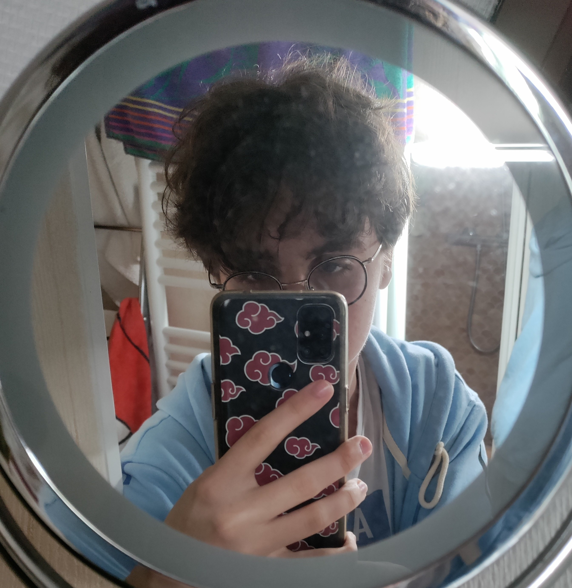

TOM GARRIDO
2ème année de Cycle Ingénieur - Efrei
J’ai toujours eu un côté créatif. Dès mon plus jeune âge, J’aimais créer des jeux de sociétés. En grandissant, j’ai découvert le monde de l’informatique, un univers qui m’a à la fois fasciné et attiré. Je me suis alors orienté vers des études d’ingénieur informatique avec pour ambition de concevoir des jeux-vidéos et des applications pour laisser libre cours à mon imagination débordante tout en aidant la société à se développer.
Retrouvez ce projet sur GitHub
Le code source complet est disponible en accès libre sur mon dépôt personnel.
Voir le code sourceComposition du code
- HTML (75%)
- CSS (23%)
- JS (2%)